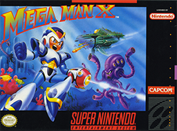

Seção Fandom – A Alma da Comunidade Mega Man
A seção Fandom é o coração pulsante do nosso site, onde a paixão dos fãs por Mega Man ganha vida em múltiplas formas. Mais do que uma homenagem à franquia, este espaço é uma celebração da criatividade, dedicação e imaginação que mantêm o legado do robô azul vivo por gerações.
Aqui, os visitantes encontram uma galeria vibrante de fanarts, cosplays e fan games, produzidos por artistas e desenvolvedores que transformam sua admiração em obras incríveis. Também damos espaço para fanfics e HQs originais, onde novas histórias expandem o universo de Mega Man com narrativas emocionantes e personagens cativantes.
A comunidade é movida por curiosidade e paixão, e por isso reunimos as teorias mais intrigantes, mistérios não resolvidos e easter eggs descobertos pelos fãs, que alimentam debates e reflexões sobre o passado, presente e futuro da franquia. Para tornar essa experiência ainda mais interativa, oferecemos enquetes, votações e quizzes, permitindo que cada fã compartilhe suas opiniões e teste seus conhecimentos.
Nosso Hall da Fama destaca os membros mais ativos e criativos da comunidade, seja por seus recordes em speedruns, contribuições artísticas ou envolvimento em eventos. Falando nisso, também mantemos um calendário de datas especiais, como o aniversário da franquia em 17 de dezembro, com desafios e celebrações temáticas.
A seção Fandom é mais do que conteúdo: é uma homenagem viva à força da comunidade. Aqui, cada fã é parte essencial da história. Seja bem-vindo — este espaço é seu.
